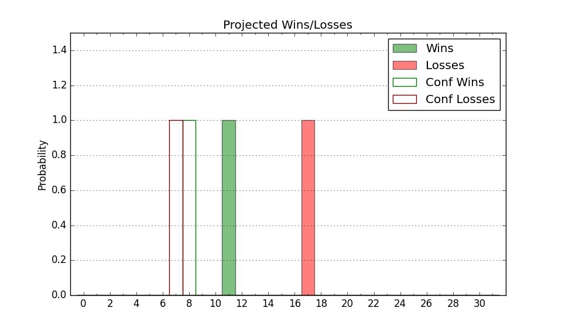

| Home | Game Probabilities | Conferences | Preseason Predictions | Odds Charts | NCAA Tournament |
| City: | Norfolk, Virginia | |
| Conference: | Mid-Eastern (4th)
| |
| Record: | 8-7 (Conf) 11-17 (Overall) | |
| Ratings: | Comp.: -17.1 (320th) Net: -17.1 (320th) Off: 100.6 (312th) Def: 117.7 (315th) SoR: 0.0 (96th) |
| Remaining | ||||||
|---|---|---|---|---|---|---|
| Date | Opponent | Win Prob | Pred. | |||
| Previous | Game Score | |||||
| Date | Opponent | Win Prob | Result | Off | Def | Net |
| 11/8 | William & Mary (133) | 19.5% | L 78-81 | -0.9 | 11.8 | 10.9 |
| 11/11 | @Old Dominion (260) | 19.3% | L 57-60 | -11.1 | 18.7 | 7.6 |
| 11/14 | @Towson (151) | 8.1% | L 41-51 | -22.3 | 30.0 | 7.7 |
| 11/21 | Hampton (267) | 46.7% | W 62-60 | -6.3 | 7.5 | 1.2 |
| 11/23 | @Wyoming (96) | 4.1% | L 67-75 | 2.3 | 16.0 | 18.4 |
| 11/29 | @Arizona (3) | 0.2% | L 61-98 | 1.9 | 10.2 | 12.1 |
| 12/6 | @James Madison (224) | 14.2% | L 67-68 | 1.8 | 13.5 | 15.3 |
| 12/10 | @Baylor (41) | 1.4% | L 67-97 | -4.1 | 10.2 | 6.1 |
| 12/18 | (N) Grambling St. (291) | 39.0% | L 68-80 | -8.9 | -4.7 | -13.6 |
| 12/19 | (N) Jackson St. (351) | 66.9% | W 82-72 | 1.5 | 7.4 | 8.9 |
| 12/21 | @UTEP (269) | 20.7% | W 72-71 | 5.3 | 7.8 | 13.1 |
| 12/22 | UC Irvine (112) | 15.2% | L 70-89 | 11.3 | -23.9 | -12.6 |
| 12/28 | @Louisiana Lafayette (317) | 32.5% | L 54-63 | -12.3 | -1.6 | -14.0 |
| 1/3 | @North Carolina Central (349) | 51.2% | L 67-69 | -9.8 | 8.1 | -1.7 |
| 1/10 | @Delaware St. (362) | 67.0% | W 66-64 | -10.4 | 5.5 | -4.9 |
| 1/12 | Md Eastern Shore (347) | 77.6% | L 70-74 | 4.0 | -19.8 | -15.7 |
| 1/17 | @South Carolina St. (359) | 60.8% | W 89-82 | 16.1 | -10.6 | 5.5 |
| 1/24 | Coppin St. (364) | 89.9% | W 103-76 | 14.1 | 0.7 | 14.7 |
| 1/26 | Morgan St. (356) | 83.3% | L 78-79 | -15.0 | -1.8 | -16.8 |
| 1/31 | @Howard (194) | 11.2% | L 60-88 | -8.3 | -12.5 | -20.9 |
| 2/7 | North Carolina Central (349) | 78.1% | W 75-68 | -12.0 | 9.3 | -2.6 |
| 2/14 | Delaware St. (362) | 87.4% | W 75-58 | 10.7 | -2.9 | 7.8 |
| 2/16 | @Md Eastern Shore (347) | 50.4% | W 70-66 | 18.7 | -7.1 | 11.6 |
| 2/21 | South Carolina St. (359) | 84.1% | W 90-71 | 13.9 | 0.3 | 14.2 |
| 2/28 | @Coppin St. (364) | 72.3% | W 75-69 | 0.4 | -6.7 | -6.3 |
| 3/2 | @Morgan St. (356) | 59.4% | L 84-90 | -1.6 | -13.3 | -14.8 |
| 3/5 | Howard (194) | 30.0% | L 76-84 | 10.3 | -13.5 | -3.2 |
| 3/12 | (N) South Carolina St. (359) | 74.1% | L 82-88 | -1.9 | -15.1 | -17.0 |
| Stats & Trends | |||||
|---|---|---|---|---|---|
| Current | Day | Week | Month | Season | |
| Composite | -17.1 | -0.6 | -0.6 | -1.2 | -6.5 |
| Comp Rank | 320 | -1 | -1 | -6 | -49 |
| Net Efficiency | -17.1 | -0.6 | -0.6 | -1.0 | -- |
| Net Rank | 320 | -1 | -1 | -6 | -- |
| Off Efficiency | 100.6 | -0.0 | +0.0 | +2.3 | -- |
| Off Rank | 312 | +1 | +1 | +17 | -- |
| Def Efficiency | 117.7 | -0.6 | -0.6 | -3.4 | -- |
| Def Rank | 315 | -6 | -4 | -34 | -- |
| SoS Rank | 353 | -3 | -3 | -23 | -- |
| Exp. Wins | 11.0 | -- | -- | -0.1 | -3.6 |
| Exp. Conf Wins | 8.0 | -- | -- | -0.1 | -1.5 |
| Conf Champ Prob | 0.0 | -- | -- | -9.4 | -40.0 |

| Advanced Stats | ||
|---|---|---|
| Stat | Value | Rank |
| Off Eff FG % | 0.472 | 315 |
| Off Ast Ratio | 0.116 | 348 |
| Off ORB% | 0.286 | 227 |
| Off TO Rate | 0.162 | 299 |
| Off FT Ratio | 0.380 | 121 |
| Def Eff FG % | 0.564 | 337 |
| Def Ast Ratio | 0.173 | 338 |
| Def ORB% | 0.327 | 282 |
| Def TO Rate | 0.145 | 184 |
| Def FT Ratio | 0.452 | 345 |